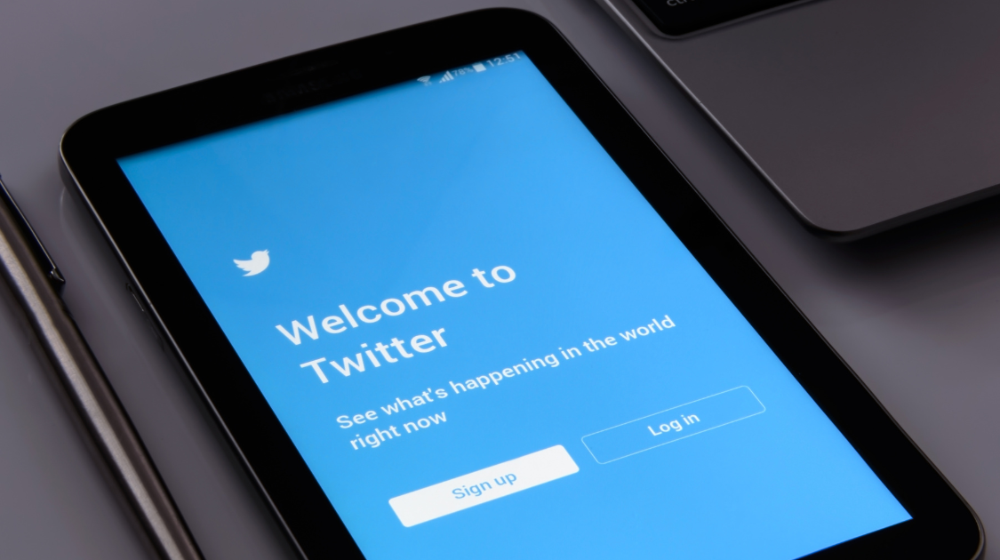

Business & Technology
Elon Musk Buys Twitter for $44 Billion
By Hanna Grover | Published May 6, 2022 5:29 p.m. PST

One of the largest social media platforms, Twitter, gave a shock to the social media world last week by agreeing to sell itself to Elon Musk for $44 Billion who described himself as a “free-speech absolutist.”
You may be wondering, why would the world's richest man and creator of Tesla have anything to do with Twitter? Musk has shown a motive to loosen the site’s content moderation policies and create value that the company’s current owner can’t–which is encouraging free speech. He wants Twitter's algorithm for prioritizing tweets to be public, and he objects to giving too much power to companies that merely advertise. Musk has also advocated that he wants to create a few tweaks to the overall user experience such as adding an edit button and getting rid of "spam bots'' that send overwhelming amounts of unwanted tweets. His overall goal is to increase the idea of "free speech" and use Twitter as an advantage.
"Free speech is the bedrock of a functioning democracy, and Twitter is the digital town square where matters vital to the future of humanity are debated," Musk said in a statement.
Many predict that with this new leadership by Elon Musk, the bigger picture will mean less moderation and restoration of banned individuals–including former President Donald Trump. However, Trump has clearly stated that he will not be returning to Twitter and his company is building a rival platform called Truth Social.
The public opinions on this newly gained power are controversial, with some delighted with the change of fewer controls, while human rights advocates fear a rise in hate speech with this new freedom. Many worry that Twitter, being a less-regulated platform and moving towards lucid free speech, will result in utter chaos.
It is unclear if Twitter will continue to prosper and turn into the free-speech environment Musk envisions, or if his move will just be another continuation of billionaires' buying control of social media platforms.